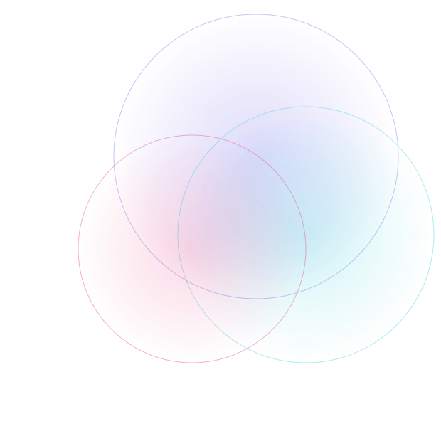

WV DUNA Day marks the effective date of West Virginia's Decentralized Unincorporated Nonprofit Association Act. It is co-sponsored by three organizations working to put West Virginia at the center of the global data economy.
An independent 501(c)(3) created to ensure the agentic AI era serves the wellbeing, autonomy, and prosperity of people the market would otherwise pass over. It works through four pillars: Policy, Ethics, Research, and Action.
In West Virginia, that means tools for Main Street, a legal home for founders, and support for member-governed ventures.
A West Virginia organization advancing blockchain literacy, policy, and adoption across the state, and connecting local builders to the wider digital-asset ecosystem.
A grassroots advocacy organization mobilizing the crypto community around sensible policy and the legal clarity that lets builders operate in the open.
West Virginia's economy runs on small business. Nearly all of the state's firms are small, and most are solopreneurs with no employees at all. For a century the state exported raw energy and watched the value leave with it.
The agentic AI economy is forming now. Without deliberate effort, its gains concentrate in a few coastal hubs while the costs, from energy and water draw to grid strain, settle on places like Appalachia. The Institute exists in part to change that arithmetic, keeping the value of the build-out in the communities that host it.
West Virginia stops being a place that capital and customers go around. Compute, the tax base, and the jobs stay in-state, small businesses gain real leverage, and the benefits of AI reach the people who would otherwise be left out. Measured the Kinship way, success is greater autonomy: tools that help a West Virginian resolve a problem, build a skill, or grow a business, and then step back.